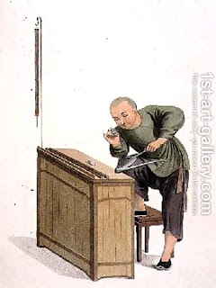

Bava Metzia 52 - Fraud with Eroded Money

Coins erode with use, and using them as if new could constitute a fraud.
How much of a sela coin can be missing? Rabbi Meir says, four issars per sela , or 1/24. Rabbi Yehuda says, 1/12, and Rabbi Shimon says eight pundions , or 1/6. For how long can one return a defective coin? In large cities, as long as it takes to show the coin to a moneychanger; in villages, until the following Sabbath, when the person will use it shopping for food.
Coins that still circulate, albeit with difficulty, should be accepted, and the one who doesn’t is called stingy. After this they should be used for necklaces or destroyed.